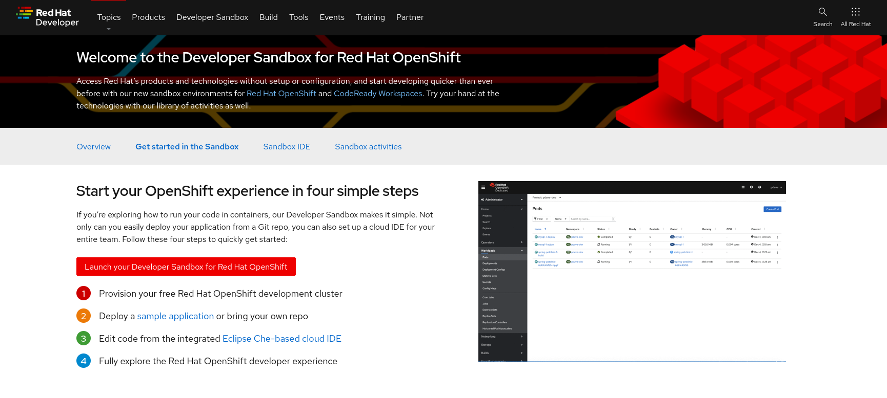
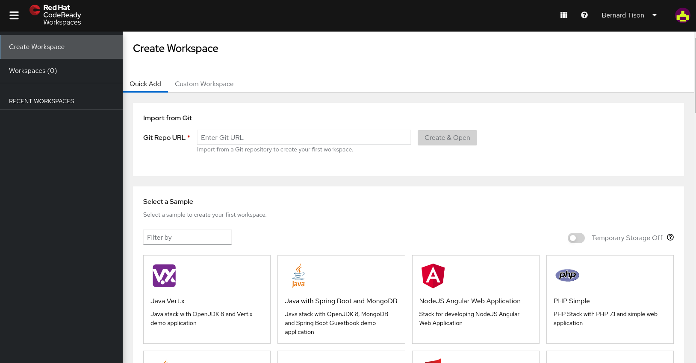
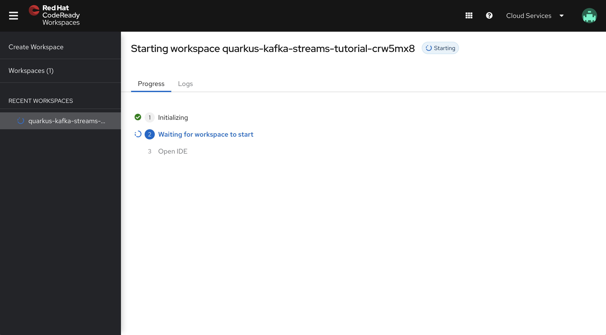
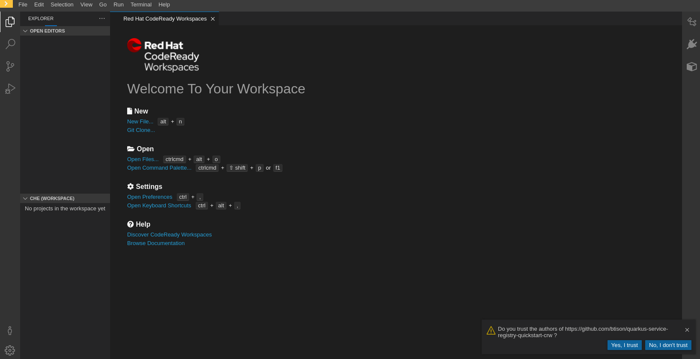
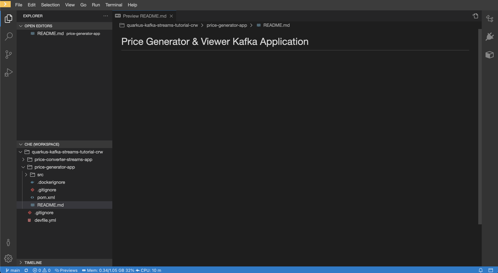
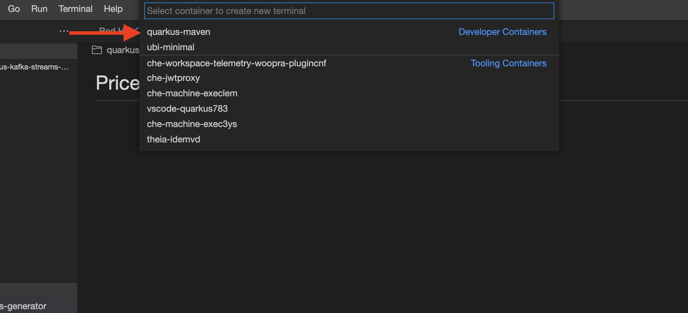
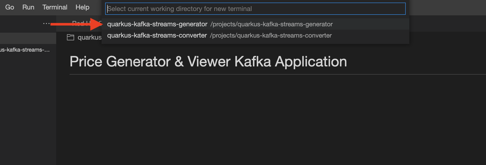
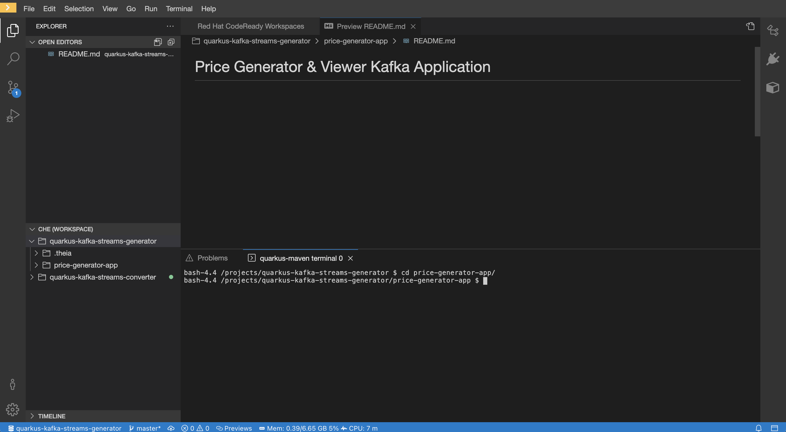
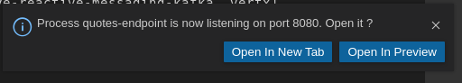

Using Quarkus and Kafka Streams with OpenShift Streams for Apache Kafka
Architecture Overview
In this workshop you use CodeReady Workspaces, an web-based IDE, on the Developer Sandbox for Red Hat OpenShift to develop, inspect, and run applications. These applications are built using Java, the Quarkus framework, and Kafka Streams API.
The Kafka Streams application will perform a map operation on entries in the usd-prices to create corresponding records in a eur-prices topic. Map is a stateless operation available in the Kafka Streams DSL.

Kafka Streams provides a DSL (Domain Specific Language) that enables developers to create scalable data stream processing pipelines with minimal amounts of code.
Quarkus is a Kubernetes-native Java framework made for Java virtual machines (JVMs) and native compilation, and optimized for serverless, cloud, and Kubernetes environments.
The Developer Sandbox for Red Hat OpenShift provides you with a private OpenShift environment in a shared, multi-tenant OpenShift cluster that is pre-configured with a set of developer tools.
CodeReady Workspaces is an in-browser IDE that delivers consistent developer environments on Red Hat OpenShift.
Access the Developer Sandbox
You can spin up and access your Developer Sandbox with your Red Hat account (the same account you used to create an OpenShift Streams for Apache Kafka instance).
-
In a browser window, go to developers.redhat.com/developer-sandbox/get-started.
-
Click the Launch your Developer Sandbox for Red Hat OpenShift button.
 -
If required, log in in with your Red Hat account username and password.
-
If this is the first time you use the Developer Sandbox, your account needs to be set up. This includes a phone verification step to reduce the creation of fraudulent accounts. After this step it will take a couple of seconds to set up the sandbox. Click the Start using your sandbox button to launch the sandbox.

-
Click the DevSandbox option to log into your sandbox.
-
You are redirected to the Developer Perspective of your Sandbox OpenShift environment. Feel free to take or skip the Get Started tour.

Start CodeReady Workspaces
-
In the Sandbox OpenShift web console, click on the Applications icon on the top menu. In the drop-down pane, select CodeReady Workspaces to launch your instance of CodeReady Workspaces.

-
If necessary, click DevSandbox to log in. If you’re prompted to prvoide permissions and update account information, go ahead and complete these steps.
The CodeReady Workspaces landing page opens in a new tab of your browser. Make sure the Create Workspace page is selected.
 -
In the Git Repo URL text box on the Quick Add tab, enter the following url to open the workspace for this lab:
https://github.com/evanshortiss/quarkus-kafka-streams-tutorial-crw -
Click Create & Open to create the workspace.
-
The creation and startup of the workspace will take a few moments.
 -
Once the workspace is created and started, you are redirected to the main IDE page.
 -
To complete the import of the workspace, click Yes, I trust in the popup box asking if you trust the authors of the github repo.

You can ignore the popup box asking to restart to enable the recommended extensions.
Notice that your workspace contains two projects corresponding to the two Quarkus applications used in this workshop.

Configure and run the Quarkus Application
In this workshop you will build and run both applications from terminal windows in CodeReady Workspaces.
Access Kafka instances is managed using a bootstrap server URL, service account, and SASL/OAUTHBEARER token endpoint. For both applications, the Kafka connection properties are configured using their respective application.properties file. This example sets environment variables and references them in this file.
-
In your CodeReady Workspace, open a terminal for the
price-generator-appapplication.-
In the top menu, select Terminal → Open Terminal in specific container.
 -
In the popup window, select quarkus-maven. In the next popup, select quarkus-kafka-streams-generator to open the terminal.

-
-
In the terminal window, change directory to the
price-generator-appdirectory.cd price-generator-app/ -
In the terminal, set the following environment variables to use your Kafka instance with the Quarkus application. Replace the values with your own server and credential information which you copied before from console.redhat.com:
-
The
<bootstrap_server>is the bootstrap server endpoint for your Kafka instance. -
The
<oauth_token_endpoint_uri>is the SASL/OAUTHBEARER token endpoint. -
The
<client_id>and<client_secret>are the generated credentials for your service account.Setting environment variables for server and credentials:
export BOOTSTRAP_SERVER=<bootstrap_server> export OAUTH_TOKEN_ENDPOINT_URI=<oauth_token_endpoint_uri> export CLIENT_ID=<client_id> export CLIENT_SECRET=<client_secret>
-
-
In the Quarkus quarkus-kafka-streams-generator/price-generator-app source code, review the
/src/main/resources/application.propertiesfile to understand how the environment variables you set in the previous step are used.Quarkus applications use MicroProfile Reactive Messaging to produce messages to and consume messages from your Kafka instances in OpenShift Streams for Apache Kafka. For details on configuration options, see Using Apache Kafka with Reactive Messaging in the Quarkus documentation.
-
In the terminal, launch the Quarkus application with the maven
quarkus:devgoal. This will start the application in Quarkus development mode.mvn compile quarkus:dev -
When the application is started up, a popup appears in the bottom right corner of the IDE window, prompting to open a browser tab to the application. Click Open In New Tab to open the tab.
This opens a browser tab to the main application window of the price-generator-app application.
-
Observe the, and logs from the price-generator-app in the terminal.
Once the UI establishes a HTTP connection to the backend, the backend will generate a random USD price every 5 seconds, and produce it to the
usd-pricesKafka topic. The records in theusd-pricesare sent to the browser via HTTP Server-Sent Events and displayed in real-time.

Configure and run the Kafka Streams Application
The Kafka Streams application will consume the usd-prices topic, and produce records to a new eur-prices topic. The records in the eur-prices topic will be used to populate the missing EUR column in the UI.
-
In your CodeReady Workspace, open a new terminal for the
quarkus-kafka-streams-converterapplication:-
In the top menu, select Terminal → Open Terminal in specific container.
-
In the popup window, select quarkus-maven. In the next popup, select quarkus-kafka-streams-converter to open the terminal.
-
-
In the terminal window, change directory to the
price-converter-streams-appdirectory.cd price-converter-streams-app -
In the terminal, set the environment variables the same as you did for the
price-generator-app:export BOOTSTRAP_SERVER=<bootstrap_server> export OAUTH_TOKEN_ENDPOINT_URI=<oauth_token_endpoint_uri> export CLIENT_ID=<client_id> export CLIENT_SECRET=<client_secret> -
In the price-converter-streams-app source code, review the
/src/main/resources/application.propertiesand note:-
References to the environment variables you set in the previous step.
-
The
kafka-streamsproperties, e.g thecommit.interval.msto commit the current offset every 1000 milliseconds, or theapplication-idthat is the consumer group ID of this application. -
Properties prefixed with
%testthat are used to connect to a local Kafka driver when running tests via themvn testcommand.
-
-
In the price-converter-streams-app source code, review the
TopologyProducer.javafile. The file has multiple inline comments that explain how the code works. -
In the terminal, launch the price-converter-streams-app with the maven
quarkus:devgoal. This will start the application in Quarkus development mode.mvn compile quarkus:dev -
When the application is started up, a popup appears in the bottom right corner of the IDE window, prompting to add a redirect to port 8081. You don’t need this for this workshop, so click No.
-
Once the price-converter-streams-app is started, it will consume all records from the
usd-pricestopic, pass them through amapValuesfunction and write the resulting rercord to theeur-pricestopic.
The records produced to the eur-prices topic are consumed by the price-generator-app and streamed to the UI. The UI should automatically update and show the converted values in the corresponding EUR column, and this happens almost instantaneously!

Experiment with the Kafka Streams Application
Stop and Restart the Application
-
Select the terminal where the price-converter-streams-app is running.
-
Press
CTRL + Ctogether to stop the application. -
Return to the browser window that lists the prices. Notice that the EUR column is no longer populated?

-
Return to the terminal where the price-converter-streams-app was running.
-
Start the price-converter-streams-app again:
mvn compile quarkus:dev -
The EUR prices column should be populated again.
|
CodeReady Workspace imposes a short timeout on HTTP sockets. Some cells in the EUR column might not be updated due to timing of this connection timeout and reconnect logic in the UI. If the EUR column is not populated after restarting the Kafka Streams application, you might need to refresh your browser. This is a browser-side issue, and not related to the Kafka Streams application. |
Modify the Kafka Streams Topology
-
Select the terminal where the price-converter-streams-app is running. Stop the application using
CTRL + C. -
Open the
TopologyProducer.javafile under theprice-converter-streams-app/src/main/javadirectory. -
Add a filter directly between
builder.streamandmapValueslines:.filter((k, v) -> { // Filter out records with a price of less than $4 return Double.valueOf(v.getPrice()) >= 4.0; }) -
Start the price-converter-streams-app again:
mvn compile quarkus:dev -
Return to the browser window that lists the prices. Rows with USD values less than $4 will no longer have a EUR conversion available to display.
Clean up
-
In the CodeReady Workspace IDE, stop the consumer and producer application by entering
Ctrl + Cin the application terminal. -
If you no longer require your Kafka instance, you can delete it from the Application Services section of console.redhat.com.